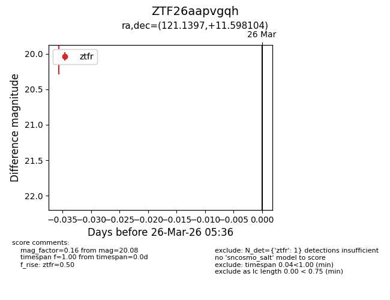
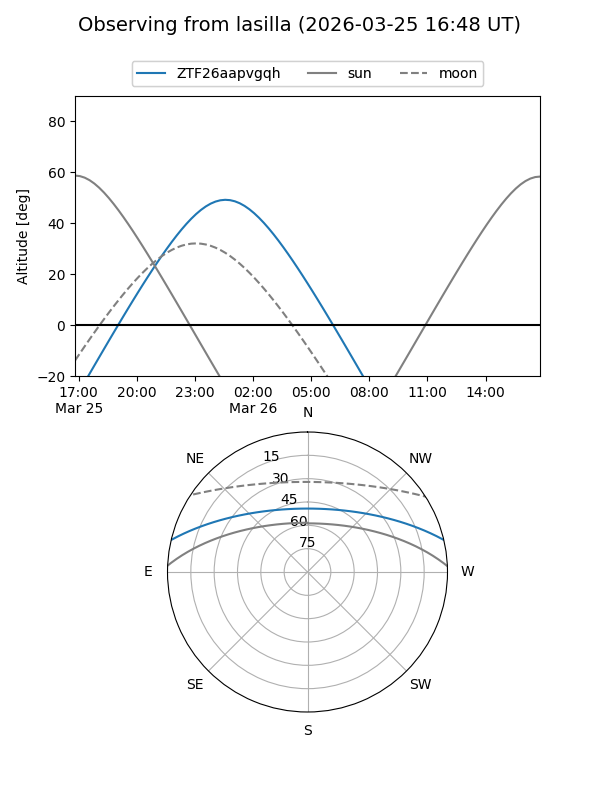
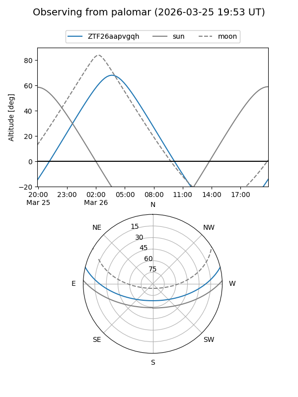

ZTF26aapvgqh
Target ZTF26aapvgqh at 2026-03-26 05:40
Aliases and brokers:
FINK: link
Lasair: link
ALeRCE: link
alt names
ZTF26aapvgqh (ztf,fink_ztf)
Coordinates:
equatorial (ra, dec) = 121.1397,+11.59810
equatorial (HMS+DMS) = 08:04:33.53,+11:35:53.17
galactic (l, b) = (210.5419,+21.41567)
Flags:
Photometry:
last ztfr=20.08
1 ztfr detections
Lightcurve

Visibility


Additional plots